Multiple Linear Regression 2
Lecture 15
Recap: linear regression
Population model
Multiple linear regression captures the relationship between a numerical outcome \(Y\) and many numerical predictors \(X_1\), \(X_2\), …, \(X_p\):
\[\Large{Y = \beta_0 + \beta_1 X_1 + \beta_2 X_2 + ...+ \beta_p X_p+\epsilon}\]
- \(\beta_0\): True intercept of the relationship between the \(X_j\) and \(Y\)
- \(\beta_j\): True slope of the relationship between \(X_j\) and \(Y\)
- \(\epsilon\): Error (residual)
. . .
The model with the greek letters and the error term is the “true,” idealized, population relationship that we could access if we had infinite amounts of perfect data. But we don’t, so we have to settle for…
Estimated model
\[\Large{\widehat{Y} = b_0 + b_1 X_1 + b_2 X_2 + ... + b_pX_p}\]
- \(b_j\): Estimated slope of the relationship between \(X_j\) and \(Y\);
- \(b_0\): your prediction for \(Y\) if all the predictors equal zero;
- No error term!
. . .
This is your best guess at the true regression function based on the noisy, meager, imperfect data you actually have access to. We still compute the \(b_j\) using the principle of least squares: pick the estimates that make the sum of squared residuals as small as possible.
Example: one numerical predictor
Example: one numerical predictor
bm_fl_fit <- linear_reg() |>
fit(body_mass_g ~ flipper_length_mm, data = penguins)
tidy(bm_fl_fit)# A tibble: 2 × 5
term estimate std.error statistic p.value
<chr> <dbl> <dbl> <dbl> <dbl>
1 (Intercept) -5781. 306. -18.9 5.59e- 55
2 flipper_length_mm 49.7 1.52 32.7 4.37e-107\[ \widehat{\text{body mass (g)}}=-5780.83+49.68\times \text{flipper length (mm)} \]
Example: one numerical predictor
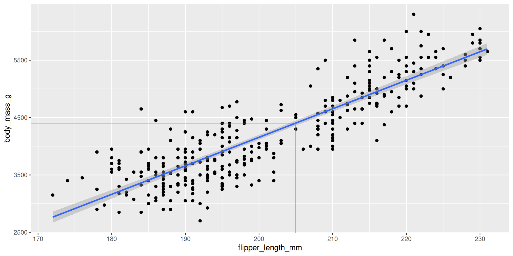
new_penguin <- tibble(
flipper_length_mm = 205
)
predict(bm_fl_fit,
new_penguin)# A tibble: 1 × 1
.pred
<dbl>
1 4405.Example: “one categorical predictor”
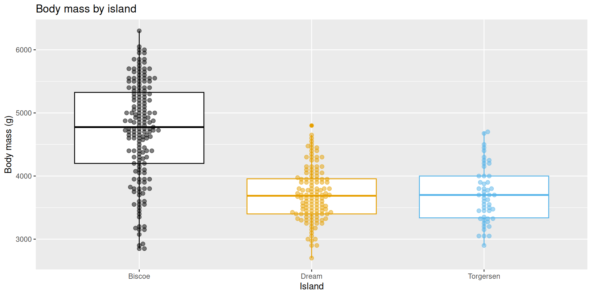
Example: “one categorical predictor”
This actually gets treated as \(k\) binary (0/1) variables, where k is equal to the number of levels in the categorical predictor, \(k-1\) of which are included as predictors in the model:
bm_island_fit <- linear_reg() |>
fit(body_mass_g ~ island, data = penguins)
tidy(bm_island_fit)# A tibble: 3 × 5
term estimate std.error statistic p.value
<chr> <dbl> <dbl> <dbl> <dbl>
1 (Intercept) 4716. 48.5 97.3 8.93e-250
2 islandDream -1003. 74.2 -13.5 1.42e- 33
3 islandTorgersen -1010. 100. -10.1 4.66e- 21\[ \begin{aligned} \widehat{\text{body mass (g)}} = 4716 &- 1003 \times \text{islandDream} \\ &- 1010 \times \text{islandTorgersen} \end{aligned} \]
Example: “one categorical predictor”
It’s just a concise way of summarizing the within-group means of the response variable:
penguins |>
group_by(island) |>
summarize(
avg_body_mass = mean(body_mass_g, na.rm = TRUE)
)# A tibble: 3 × 2
island avg_body_mass
<fct> <dbl>
1 Biscoe 4716.
2 Dream 3713.
3 Torgersen 3706.Example: numerical and categorical predictors
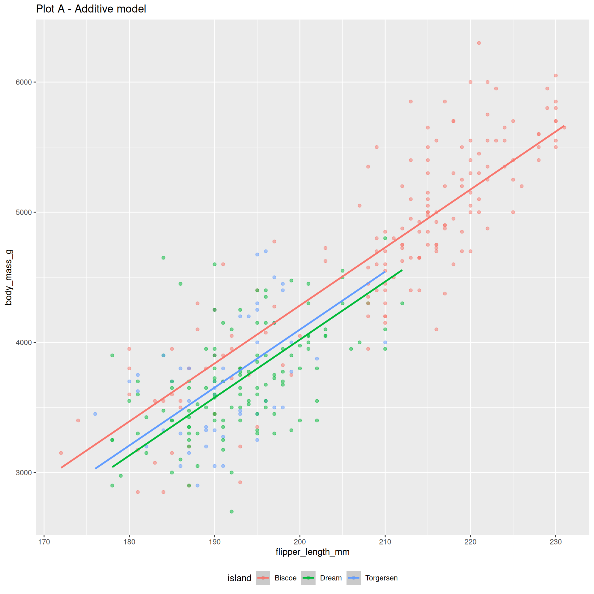

Example: numerical and categorical predictors
The additive model:
bm_fl_island_fit <- linear_reg() |>
fit(body_mass_g ~ flipper_length_mm + island, data = penguins)
tidy(bm_fl_island_fit)# A tibble: 4 × 5
term estimate std.error statistic p.value
<chr> <dbl> <dbl> <dbl> <dbl>
1 (Intercept) -4625. 392. -11.8 4.29e-27
2 flipper_length_mm 44.5 1.87 23.9 1.65e-74
3 islandDream -262. 55.0 -4.77 2.75e- 6
4 islandTorgersen -185. 70.3 -2.63 8.84e- 3\[ \begin{aligned} \widehat{\text{body mass (g)}} = -4625 &+ 44.5 \times \text{flipper length (mm)} \\ &- 262 \times \text{Dream} \\ &- 185 \times \text{Torgersen} \end{aligned} \]
Example: numerical and categorical predictors
Change one character in the code, and you get the interaction model:
bm_fl_island_int_fit <- linear_reg() |>
fit(body_mass_g ~ flipper_length_mm * island, data = penguins)
tidy(bm_fl_island_int_fit) |> select(term, estimate)# A tibble: 6 × 2
term estimate
<chr> <dbl>
1 (Intercept) -5464.
2 flipper_length_mm 48.5
3 islandDream 3551.
4 islandTorgersen 3218.
5 flipper_length_mm:islandDream -19.4
6 flipper_length_mm:islandTorgersen -17.4\[ \begin{aligned} \widehat{\text{body mass (g)}} = -5464 &+ 48.5 \times \text{flipper length (mm)} \\ &+ 3551 \times \text{Dream} \\ &+ 3218 \times \text{Torgersen} \\ &- 19.4 \times \text{flipper length*Dream} \\ &- 17.4 \times \text{flipper length*Torgersen} \end{aligned} \]
Example: numerical and categorical predictors
Same code with each of an additive and interaction model fit:
new_penguin <- tibble(
flipper_length_mm = 205,
island = "Biscoe"
)
predict(bm_fl_island_fit,
new_data = new_penguin)# A tibble: 1 × 1
.pred
<dbl>
1 4506.new_penguin <- tibble(
flipper_length_mm = 205,
island = "Biscoe"
)
predict(bm_fl_island_int_fit,
new_data = new_penguin)# A tibble: 1 × 1
.pred
<dbl>
1 4488.Example: many numerical predictors
2 predictors + 1 response = 3 dimensions. Instead of a line of best fit, it’s a plane of best fit:
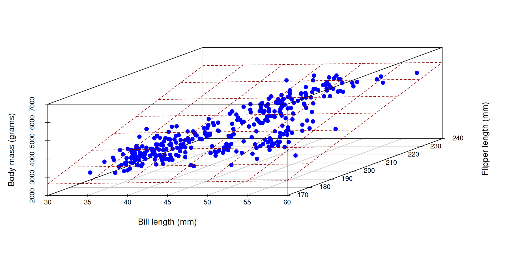
Example: many numerical predictors
bm_fl_bl_fit <- linear_reg() |>
fit(body_mass_g ~ flipper_length_mm + bill_length_mm, data = penguins)
tidy(bm_fl_bl_fit)# A tibble: 3 × 5
term estimate std.error statistic p.value
<chr> <dbl> <dbl> <dbl> <dbl>
1 (Intercept) -5737. 308. -18.6 7.80e-54
2 flipper_length_mm 48.1 2.01 23.9 7.56e-75
3 bill_length_mm 6.05 5.18 1.17 2.44e- 1\[ \small\widehat{\text{body mass (g)}}=-5736+48.1\times \text{flipper length (mm)}+6\times \text{bill length (mm)} \]
Example: many numerical predictors
new_penguin <- tibble(
flipper_length_mm = 200,
bill_length_mm = 45
)
predict(bm_fl_bl_fit, new_data = new_penguin)# A tibble: 1 × 1
.pred
<dbl>
1 4164.Welcome to statistics!
The code was basically the same every time. In this second half of the course, the code itself is not the primary complication. The code is merely a labor-saving device. Our focus shifts to understanding the conceptual and technical underpinnings of the code and interpreting the output correctly. This is subtle, and it tends to trip people up.
FAQ
Does it matter what the base level is?
Regarding the leveling of a categorical predictor:
- It doesn’t matter technically speaking. The math doesn’t change;
- As long as you know what the baseline is, you are consistent throughout your analysis, and you interpret everything correctly, you’re probably good;
- Sometimes the application suggests a natural choice of baseline. Interpretation and visualization may be easier if you respect this natural choice
- For example, if the categorical variable is ordinal, it might make sense to use the “lowest ranked” variable as the baseline, so-to-speak (e.g., predict on grade level, where “Freshman” is the baseline level)
Is interaction the same as separate regressions?
Sort of. You get the same estimates of the slopes and intercepts, but the uncertainty quantification (standard errors) is different.
This matters, but we suppress the nuance in this class.
The interaction model
linear_reg() |>
fit(body_mass_g ~ flipper_length_mm * island, data = penguins) |>
tidy() |>
select(term, estimate, std.error)# A tibble: 6 × 3
term estimate std.error
<chr> <dbl> <dbl>
1 (Intercept) -5464. 431.
2 flipper_length_mm 48.5 2.05
3 islandDream 3551. 969.
4 islandTorgersen 3218. 1680.
5 flipper_length_mm:islandDream -19.4 4.94
6 flipper_length_mm:islandTorgersen -17.4 8.73So on Biscoe island (where Dream = Torgersen = 0), the line is
\[ \begin{aligned} \widehat{\text{body mass (g)}} = -5464 &+ 48.5 \times \text{flipper length (mm)} \end{aligned} \]
Simple regression within a group
If we fit a simple model with the Biscoe subset of the data:
penguins_biscoe <- penguins |>
filter(island == "Biscoe")
linear_reg() |>
fit(body_mass_g ~ flipper_length_mm, data = penguins_biscoe) |>
tidy()# A tibble: 2 × 5
term estimate std.error statistic p.value
<chr> <dbl> <dbl> <dbl> <dbl>
1 (Intercept) -5464. 435. -12.6 8.48e-26
2 flipper_length_mm 48.5 2.07 23.4 2.20e-54Same estimates, but different standard errors.
The default picture
ggplot(penguins, aes(x = flipper_length_mm, y = body_mass_g, color = island)) +
geom_point() +
geom_smooth(method = "lm")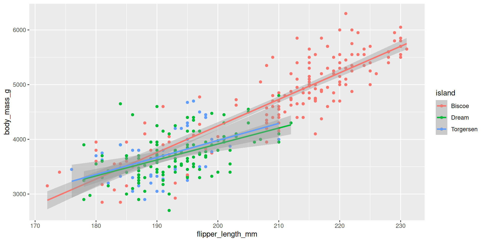
These are separate simple regressions within each group. The slopes and the intercepts are the same as the interaction model, but the uncertainty bands are different.
A second look at \(R^2\)
Recap: our first look
\(R^2\) measures “goodness-of-fit:”
- \(R^2\) is “a Rotten Tomatoes score” for your model;
- It ranges from 0 (horrific) to 1 (perfect) and measures how well the linear model fits the data;
- In simple linear regression with one numerical predictor, \(R^2\) is literally equal to the square of the correlation coefficient between the predictor \(X\) and the numerical response \(Y\);
- When you move from one predictor to many, this relationship breaks down, but \(R^2\) remains meaningful.
. . .
So what is it, actually?
Reminder: residuals
Every data point has one:
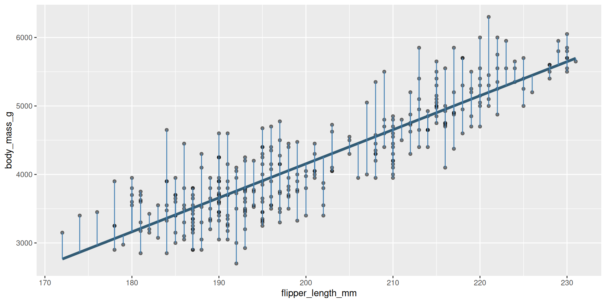
Some are big, some are small. Some are above the line (positive), and some are below the line (negative).
Reminder: residuals
The residuals are what’s left over after the model attempts to “explain” the response:
\[ e_i = \text{observed} - \text{predicted} = y_i - \widehat{y_i}. \]
Every data point has one:
augment(bm_fl_fit, penguins) |>
select(flipper_length_mm, body_mass_g, .pred, .resid)# A tibble: 344 × 4
flipper_length_mm body_mass_g .pred .resid
<int> <int> <dbl> <dbl>
1 181 3750 3212. 538.
2 186 3800 3461. 339.
3 195 3250 3908. -658.
4 NA NA NA NA
5 193 3450 3808. -358.
6 190 3650 3659. -9.43
7 181 3625 3212. 413.
8 195 4675 3908. 767.
9 193 3475 3808. -333.
10 190 4250 3659. 591.
# ℹ 334 more rowsHow it started
The original distribution of the response. This is the mess we’re trying to clean up with a model:
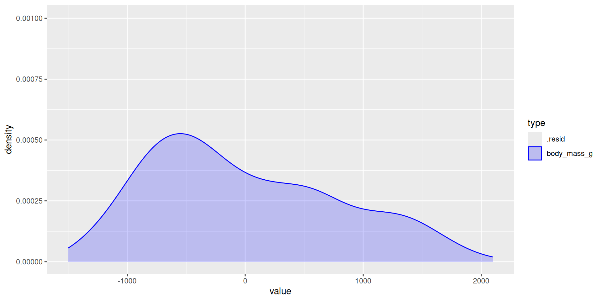
# A tibble: 1 × 3
type variance std
<chr> <dbl> <dbl>
1 body_mass_g 643131. 802.How it’s going
The distribution of the residuals (the leftover mess) after the model tries to explain (clean up):
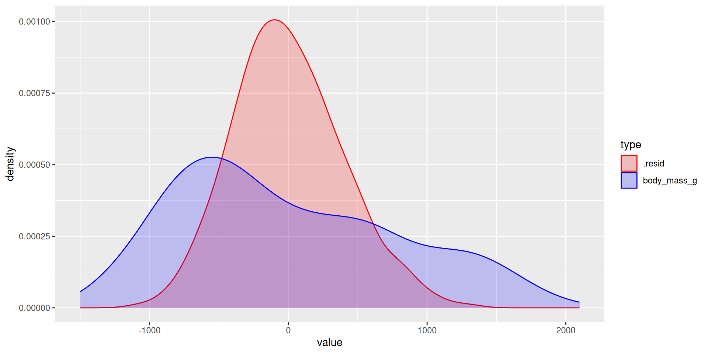
# A tibble: 2 × 3
type variance std
<chr> <dbl> <dbl>
1 .resid 154999. 394.
2 body_mass_g 643131. 802.The main idea
The model is trying to “explain” the variation in the response:
- Variation in the response (blue distribution), is the mess we’re trying to clean up;
- Variation in the residuals (red distribution), is the leftover after the model gives it a shot;
- The more leftover there is, the worse the model did;
- You can quantify this with the variance. The smaller the variance of the residuals relative to the original response variance, the better.
. . .
That’s what \(R^2\) actually is: the proportion of the variance in the response explained by the model.
\(R^2\approx 0\)
Horrifically awful fit. The model didn’t explain (clean up) anything:
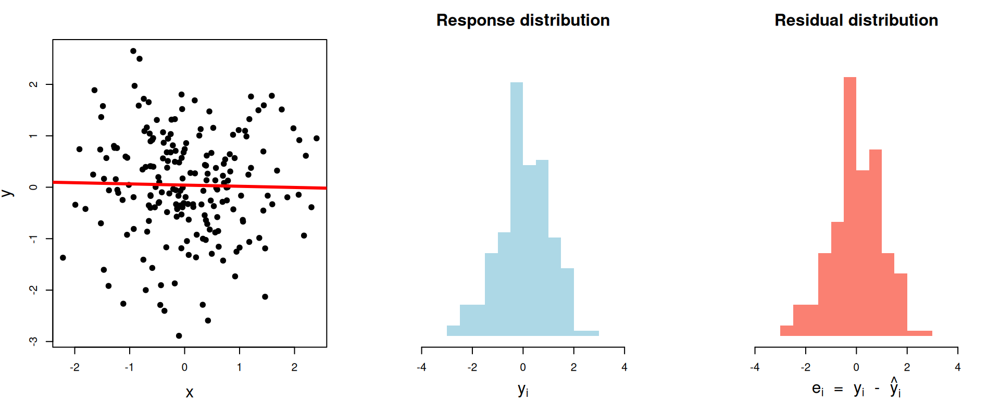
# A tibble: 1 × 3
var_y var_resid r.squared
<dbl> <dbl> <dbl>
1 1.02 1.02 0.000450\(R^2\approx 0.28\)
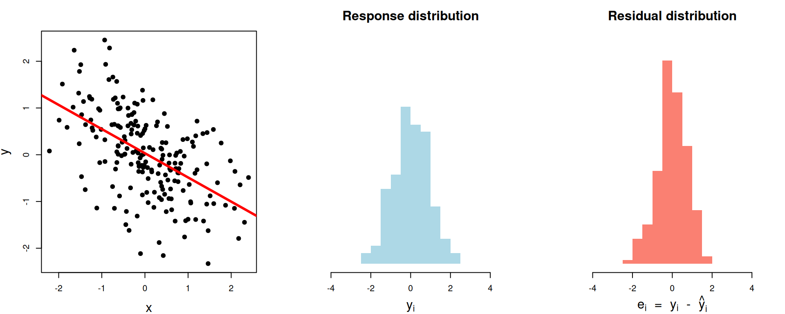
# A tibble: 1 × 3
var_y var_resid r.squared
<dbl> <dbl> <dbl>
1 0.805 0.574 0.287\(R^2\approx 0.63\)
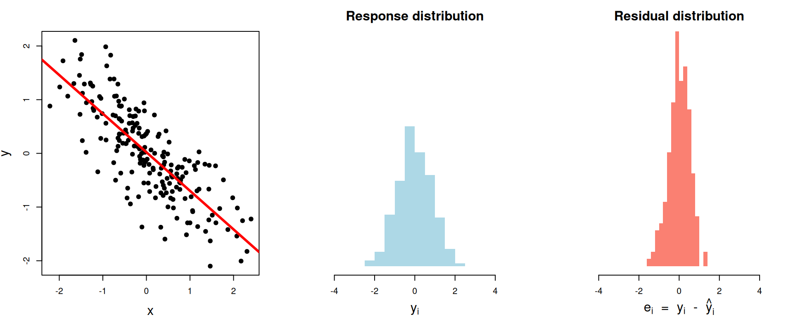
# A tibble: 1 × 3
var_y var_resid r.squared
<dbl> <dbl> <dbl>
1 0.701 0.255 0.636\(R^2\approx 0.97\)
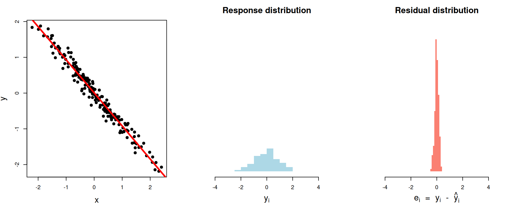
# A tibble: 1 × 3
var_y var_resid r.squared
<dbl> <dbl> <dbl>
1 0.762 0.0230 0.970\(R^2\approx 1\)
Perfect fit. The model explained (cleaned up) everything:
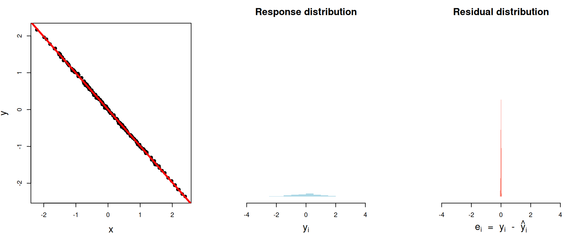
# A tibble: 1 × 3
var_y var_resid r.squared
<dbl> <dbl> <dbl>
1 0.847 0.000408 1.000The nitty gritty
\[ \begin{aligned} R^2\, = \begin{matrix} \text{proportion of}\\ \text{variation explained} \end{matrix} &= 1- \begin{matrix} \text{proportion of}\\ \text{variation unexplained} \end{matrix}\\[15pt] &= 1-\frac{\text{unexplained variation}}{\text{total variation}} \\[15pt] &= 1-\frac{\text{spread of residuals}}{\text{spread of response}} \\[15pt] &= 1-\frac{\text{var}(e_i)}{\text{var}(y_i)} . \end{aligned} \]
Literally
augment(bm_fl_fit, penguins) |>
summarize(
var_y = var(body_mass_g, na.rm = TRUE),
var_e = var(.resid, na.rm = TRUE),
R2 = 1 - var_e / var_y
)# A tibble: 1 × 3
var_y var_e R2
<dbl> <dbl> <dbl>
1 643131. 154999. 0.759. . .
linear_reg() |>
fit(body_mass_g ~ flipper_length_mm, penguins) |>
glance() |>
select(r.squared)# A tibble: 1 × 1
r.squared
<dbl>
1 0.759Summary
\(R^2\) is a number between zero and one, and it represents the proportion of the variance in the response \(Y\) that is explained by the model fit;
This is the interpretation, regardless of how many predictors you have;
In simple linear regression with one numerical predictor, \(R^2\) is also the square of the correlation coefficient, but this doesn’t generalize to the multivariate setting.
Model selection
Model selection
Question: Given many competing models for the same response, which model is “best”? What does that even mean?
. . .
Answer: Assign a “quality score” to each model, and pick the model with the best score:
| Model | Score | Verdict |
|---|---|---|
| Simple | 0.1 | ❌ |
| Additive | 0.5 | ✅ |
| Interaction | 0.48 | ❌ |
. . .
Variable selection: all of our models were linear, and they differed only by which predictor variables are included. By ranking models by a quality score and picking the “best” one, we can determine which predictors are the “most important” to include.
So… what “quality score” to choose?
This is a big area of statistical research. There are loads of “quality scores” you could consider, and they prioritize different things: predictive accuracy, goodness-of-fit, simplicity, fairness, etc.
- \(R^2\)
- adjusted \(R^2\)
- Akaike Information criterion (AIC)
- Bayesian information criterion (BIC)
- … so many more
We won’t go into detail, but you will if you keep studying statistics.
tidymodels reports many of these for free
bm_fl_fit |>
glance() |>
select(r.squared, adj.r.squared, AIC, BIC)# A tibble: 1 × 4
r.squared adj.r.squared AIC BIC
<dbl> <dbl> <dbl> <dbl>
1 0.759 0.758 5063. 5074.\(R^2\)’s dirty little secret
\(R^2\) gives participation trophies. It always goes up when you add any new variable to the model, even if that variable is worthless.
Adding a phony variable
The original model fit:
linear_reg() |>
fit(body_mass_g ~ flipper_length_mm, penguins) |>
glance() |>
pull(r.squared)[1] 0.7589925. . .
Add a predictor that is literally just a bunch of random numbers:
Adjusted \(R^2\)
Because vanilla \(R^2\) blithely rewards the addition of any variable, no matter how meaningless, you shouldn’t use it for model selection. Instead, use adjusted \(R^2\). The formula is in the textbook if you’re dying to know, but here’s the tea:
- adjusted \(R^2\) penalizes the inclusion of unnecessary, unhelpful predictors;
- It prioritizes a parsimonious model:
- a model that fits/predicts well, and…
- a model that’s not too complicated (so our pear brains can still understand it);
- Occam’s razor!
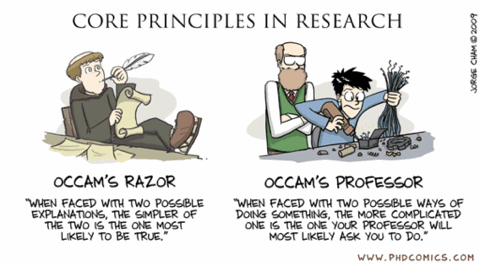
For the penguins
bm_fl_fit |> glance() |>
pull(adj.r.squared)[1] 0.7582837bm_island_fit |> glance() |>
pull(adj.r.squared)[1] 0.3899995bm_fl_island_fit |> glance() |>
pull(adj.r.squared)[1] 0.7722296bm_fl_island_int_fit |> glance() |>
pull(adj.r.squared)[1] 0.7825604bm_fl_bl_fit |> glance() |>
pull(adj.r.squared)[1] 0.7585415Balancing fit and complexity
More complex models (i.e., models with more predictors) tend to fit the data at hand better, but may not generalize well to new data.
Model selection criteria, like adjusted \(R^2\), help balance model fit and complexity to avoid overfitting by penalizing models with more predictors.
Overfitting
Overfitting occurs when a model captures not only the underlying relationship between predictors and outcome but also the random noise in the data.
-
Overfitted models tend to perform well on the observed data but poorly on new, unseen data.
- Good news: We have techniques to detect and prevent overfitting.
- Bad news: This is a topic for another day.